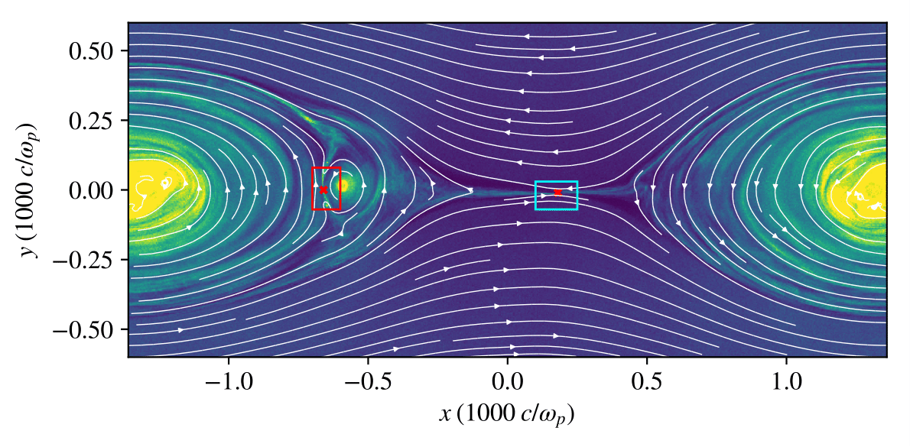

<h1>My Work</h1>
<div class="blurb">
<li><a href="https://ui.adsabs.harvard.edu/search/filter_author_facet_hier_fq_author=AND&filter_author_facet_hier_fq_author=author_facet_hier%3A%221%2FBall%2C%20D%2FBall%2C%20David%22&filter_database_fq_database=OR&filter_database_fq_database=database%3A%22astronomy%22&fq=%7B!type%3Daqp%20v%3D%24fq_database%7D&fq=%7B!type%3Daqp%20v%3D%24fq_author%7D&fq_author=(author_facet_hier%3A%221%2FBall%2C%20D%2FBall%2C%20David%22)&fq_database=(database%3A%22astronomy%22)&q=author%3A(%22%5EBall%2C%20David%22)&sort=date%20desc%2C%20bibcode%20desc", rel="me">Click here to see my first author publications!</li>
</body></html>

<p>I work mainly on topics in computational plasma astrophysics related to accretion disks around supermassive black holes.  I've worked with general-relativistic magnetohydrodynamic simulations of full accretion disks, but more recently have turned towards smaller scales.  I've been using particle-in-cell (PIC) simulations to try to  understand the microphysics of magnetic reconnection, with a particular focus on understanding how reconnection accelerates electrons to ultra-relativistic velocities and under what conditions it can do so.

I've also spent some time working with general-relativistic radiative transfer calculations to understand the observational signatures of what hot gas swirling around a black hole would actually look like.</p>
</div><!-- /.blurb -->




This plot is from a PIC simulation of reconnection.  The colorscale depicts the density (from blue to yellow), and I've superimposed streamlines of the magnetic field (white arrows).  There are two active sites of reconnection, or, X-points, that I've depicted with red crosses.  In the red box, we see reconnection occuring at the interface of a plasmoid merger, and in the cyan box, we see an X-point in the primary current sheet.  Both of these X-points are prolific sites of particle acceleration.

